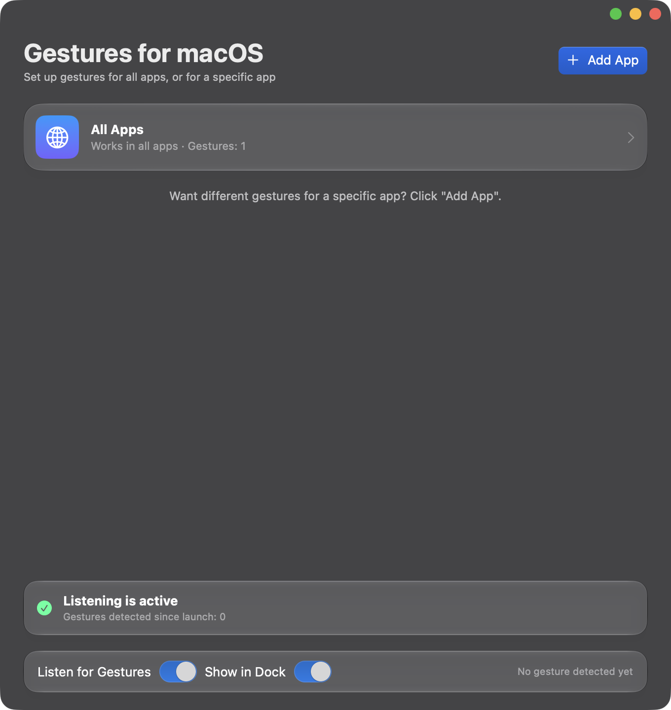
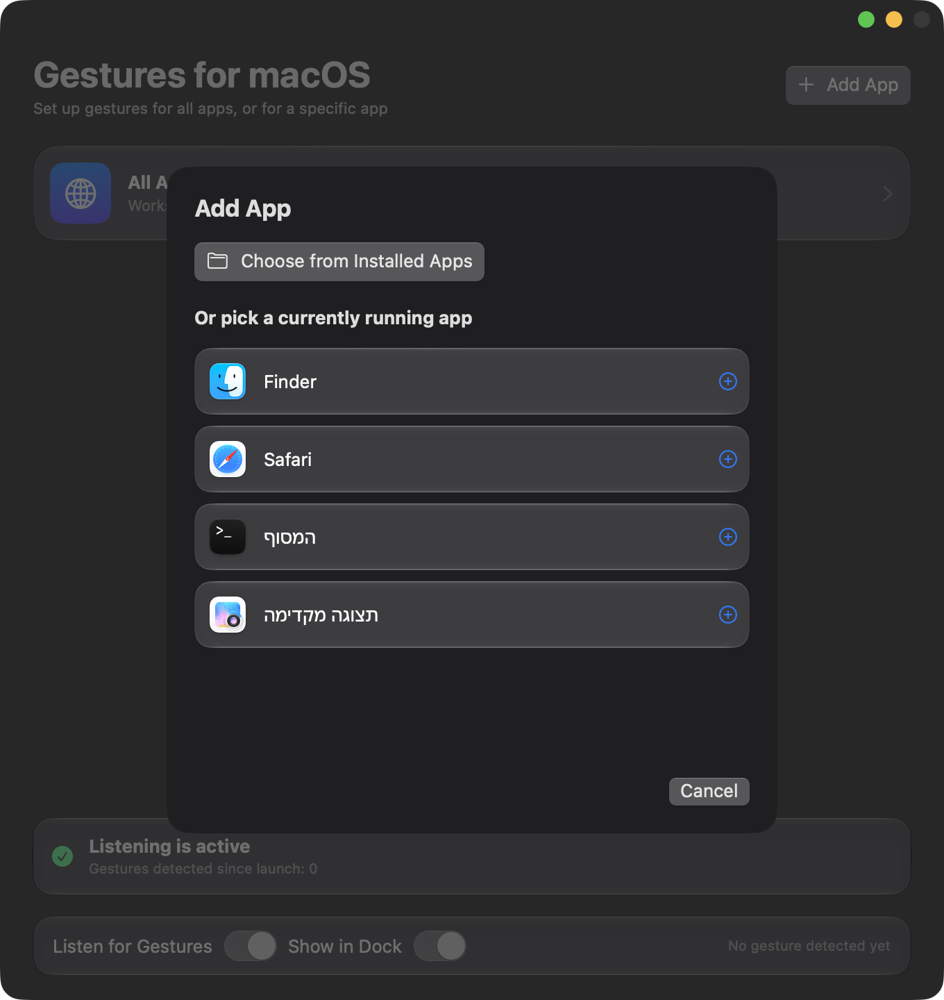
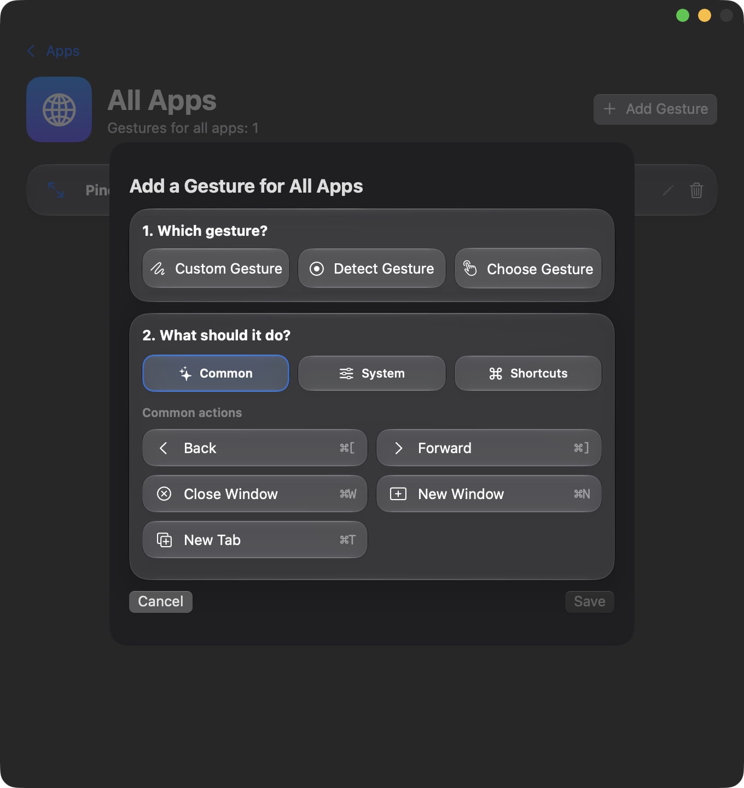

Gestures for macOS
Run actions with trackpad gestures, and choose a different action for each app.



Gestures for macOS is a small native Mac app that lets you swipe, pinch, tap or hold on the trackpad to trigger actions. What happens depends on the app in front: the same gesture can go Back in Finder and switch tabs in Safari, and you decide which. The app does not replace the gestures macOS already has. It adds your own on top of them.
Requires macOS 14 or later and a trackpad (Magic Mouse is not supported).
Features
- Many gestures. Swipes with two, three or four fingers, pinch, rotate, multi-finger taps and holds, edge slides and corner taps. You can also record a gesture and the app recognizes it.
- Simple actions. Back, Forward, Close Window, New Window, New Tab, Tab Left/Right, Reload, Copy and Paste, any menu item of the app in front, or any keyboard shortcut.
- Per-app or global. Set a gesture for all apps or only for one. The app-specific one wins.
- Light on resources. Nothing runs while you are not using a gesture.
- Native look. SwiftUI, glass materials, light and dark mode.
- Private. No network access, no account, no data collection.
Examples
- In Safari: two-finger swipe left or right switches tabs.
- In Finder: two-finger swipe goes back or forward.
- In every app: three-finger pinch closes the window; four-finger tap opens a new tab or window.
Install
Download the latest .dmg from the Releases page, open it, and drag Gestures for macOS to Applications. The app is not notarized, so on first launch go to System Settings → Privacy & Security and click Open Anyway. It then asks for Accessibility and Input Monitoring permissions. Full instructions are in the README.